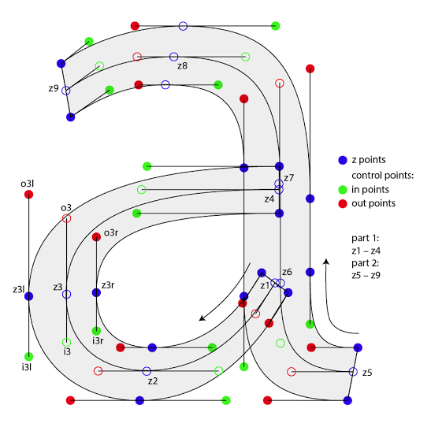
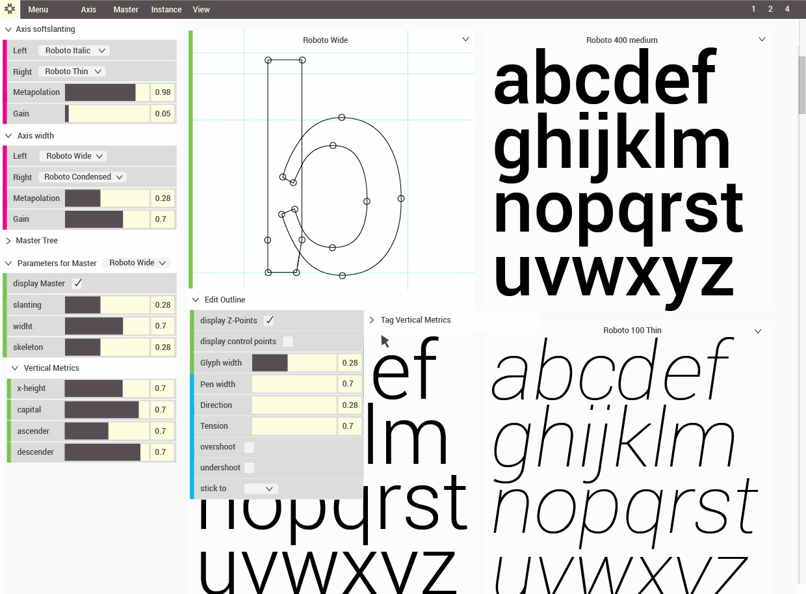
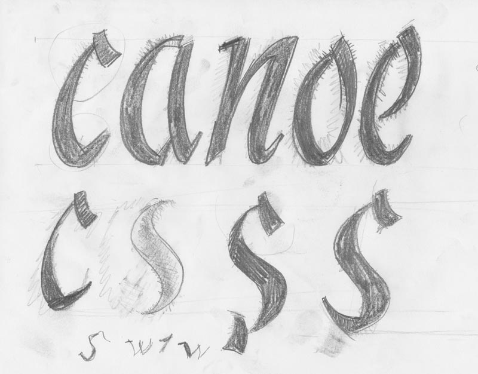
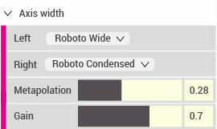
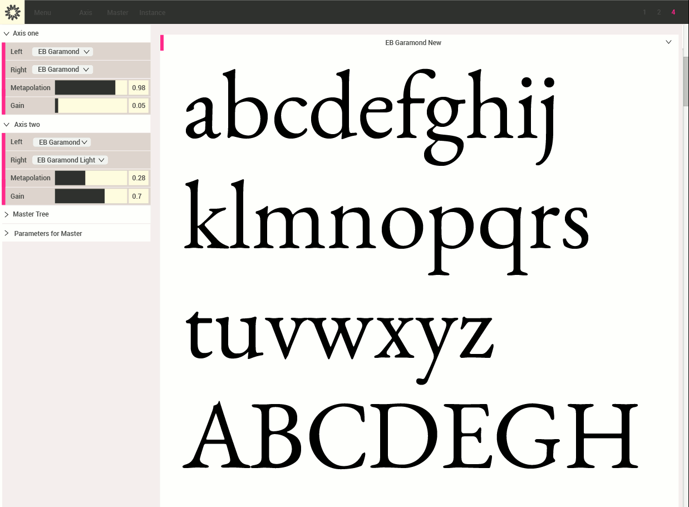

MIDI messages:
Where is the demo?
Read this page to get an idea what this is all about or get the lates build from https://github.com/metapolator/metapolator
Can we extrapolate from a single master?
Yes, Metapolator is calculating a skeleton from the glyph outline. From the skeleton to the original outline or to a parametrised version, we can create new inter- and extrapolations.
When do I need to tag points?
Glyphs gets grouped into its type when loading a UFO. A capital letter is therefore in the group 'capitals' and by changing values on vertical metrics we can adjust the height of the capital letter. If we want to specify single points we click on a point in the editor and assign it to a group. In the case of lowercase 'b' we want to tag the ascender stroke as 'b' gets into the group x-height by default (tagging the ascender is less work than tag all x-height related points).
Can I design a glyph from scratch?
Yes, but do it on paper! :) Metapolator is a system to create new styles and font families from existing fonts outlines. The system is designed to work seamlessly within the working process of type design. The design process could be for example; sketching on paper -- creating outlines in a font editor -- making new styles and families in Metapolator -- refine ufo’s in a font editor.
Is Metapolator using metaphysics?
No, the term ‘meta’ refers to Donald Knuth’s Metafont, a programming language for digital fonts. Mr. Knuth is one of the founders of contemporary mathematics and computer programming. There is no "magic" going on in Metafont, only pure, clean and perfect calculations.

Why is the slider stack always visible?
A core element is the metapolation settings. To compare values with other instances the controller is on the same view as the instances itself. Controllers can be hidden individually or by pressing ‘h’.
Can I use my renaissance antiqua in Metapolator?
Yes, for interpolation using at least 2 masters no extra work is needed. Metapolation from a single master requires tagging consistently using pairs of points.
